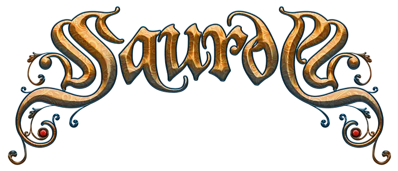

Saurom
Saurom es una banda española de folk metal que conocí a través de un amigo. Una de mis canciones favoritas es "No Seré Yo".
Algunos de mis grupos y canciones favoritas

Saurom es una banda española de folk metal que conocí a través de un amigo. Una de mis canciones favoritas es "No Seré Yo".
The Binary es una banda de J-pop y J-Rock japonesa. Originalmente contaba con dos vocalistas, mido y Akamaru, pero esta segunda abandonó el grupo en 2024. Actualmente, mido continúa componiendo y lanzando canciones en solitario bajo el nombre The Binary.
Una de mis canciones favoritas de la banda es Kienai (消えない), la última canción en la que participaron ambas.